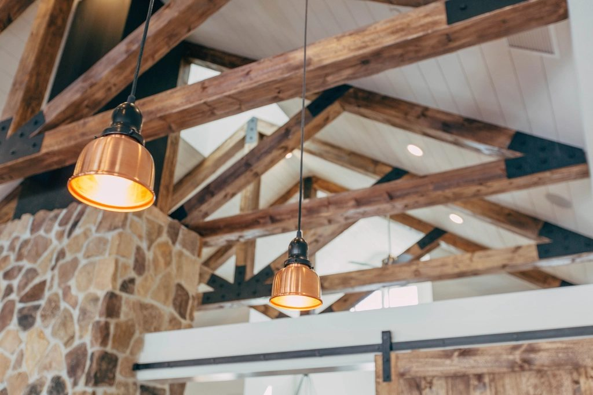
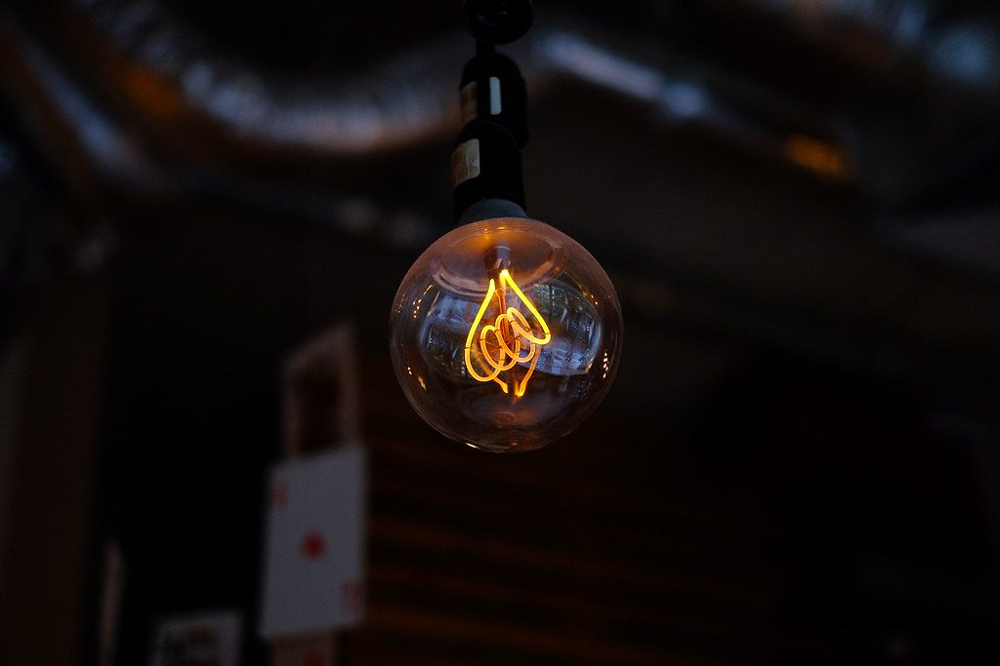
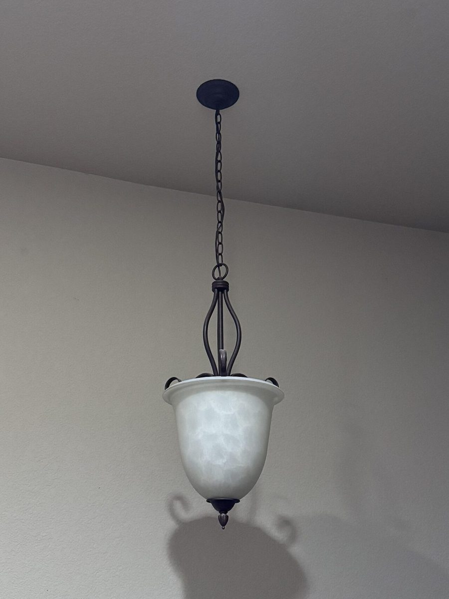

制作側の連想(お店の理念・由来とは無関係)
「ロフト」から、梁に吊る五つの明かり
店名の由来は分かりません。制作側は「ロフト」という言葉から屋根裏を連想し、梁から電球をひとつずつ吊るしていくデザインにしました。ページは全部で五つ。いま開いているページの電球だけが点灯します。これは制作側の連想で、お店の理念・由来とは無関係です。
明かりの写真(イメージ)
暗がりに、電球ひとつ。
写真は新庄市やお店の様子ではありません。国外・撮影地不明のフリー素材です。





ご案内
お店のこと(確認できたものだけ)
| 所在地 | 〒996-0025 山形県新庄市若葉町13-17 |
|---|---|
| 電話 | 0233-41-0902 |
| 営業時間 | 準備中 |
| 定休日 | 準備中 |
| ご予約 | 準備中 |
| 駐車場 | 準備中 |
| SNS | Instagram @loft_munk |